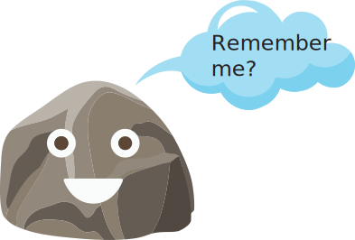

Dear friend,
I need to be honest and clear.
When I told you that I was hoping to find a great friend in you. I meant it. But now I am afraid the day won't come when I get to know you.
I think it's time for me to move on and bid you farewell. I haven't been home for two months now and since you don't want to talk to me, I have no reason to stay here.
It would be hard for me to go back home again without knowing you. I wish I never knew that you existed so that I'd be spared this pain.
If I don't forget you, you would become poison in my veins. And I can't allow that to happen. I have a life to look forward to and I must focus back on my ambitions.
When you went away in July, you were gone forty days. For forty days, I waited hoping that you would come back soon.
Every evening, I'd sit there and wish that I would see you there, with your little brother.
For the first time in my life, I felt what it's like to lose all hope. I feared I was never going to see you again. I started to believe this wasn't your home.
But, I stayed here because before you left, you waved at me. I stayed because you called me from your mother's number. When I called back, your mother picked the phone.
I thought that you would call me back soon but you never did. At that time, I thought you didn't called me again because you thought I went back home. But, now that you know I am still here, you
still aren't calling me. If calling me was too much, you could have messaged me instead. I don't understand why you didn't called me the day you waved at me. I waved back at you in case you didn't saw it.
And, did I really had to wave at you before you call me. Aren't these letters enough for you to know that I want to talk to you.
But, none of this matters now. What's done is done. I just want to say goodbye to you and move on.
I still want to know you but friendship is a mutual relationship and if you don't want to talk to me, I respect your decision.
Before sending that first letter, I didn't knew anything about you. For twenty one years, I didn't even knew that you existed. There is not much you can tell about someone from a distance but
when I saw you play with your little brother, you seemed kind to me. That was enough for me. The rest was just a leap of faith.
You were a complete mystery to me and it will most likely stay that way now.
My father's job involves frequent transfers. Changing places and schools frequently meant that I never managed to make any close friends in my childhood.
We aren't children anymore but knowing you was the closest chance I would ever get to have a childhood friend.
I will always remember you as a friend. I don't know your name and will never get the chance to know it. But, I need a name to remember you by and it doesn't matter what I call you now.
So, I will remember you by the name Sonya. It's the name of the girl in the book I am currently reading. It's a Russian novel called "War and Peace".
The name is Russian too but like I said it doesn't matter now.
There were two writers in this story. I started this story but it was always you who was going to write the ending.
This is my last letter to you. Nothing follows hereafter.
I wish that you lead a fun and exciting life. I am sure that you will become a great person one day.
This story didn't have a happy ending but that doesn't mean that this letter cannot have one too.
So, I have something for you on the next page. A token of friendship.
Clicking on the "Send" or "Continue" buttons below will take you to the next page.
If you still want to talk to me, you should tell me before this ends up as another memory.
I am here till August and once I go back home, I don't think we will get another chance to know each other.
I'll probably never see you again. I know that. And you know that. And knowing this, I say farewell.
Goodbye Sonya
Hold on...
He comes from a place where good prevails
where friendship lasts and evil fails;
He is noble, his heart kind,
A friend hard to find.
What is the name of our brave adventurer?
OR, answer this...